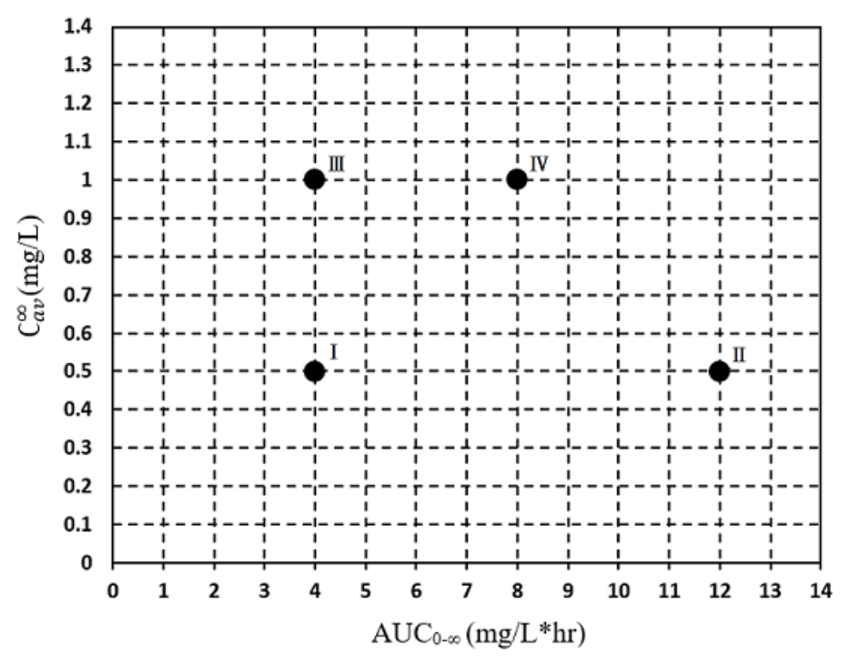

第 1 題待校
欲增加易氧化藥品之安定性，下列敘述何者最不適當？
- （A）優先考慮製備為液體製劑
- （B）若為液體製劑可加入螯合劑
- （C）避光貯存
- （D）貯存於低溫環境
答案：（A）
這一頁是民國 114 年第 2 次藥師藥劑學與生物藥劑學的整份歷屆試題，共 80 題，題目與標準答案出自考選部「國家考試試題及測驗式試題答案」開放資料，其中 63 題附有詳解。以下逐題列出題幹、選項與答案；要計時作答或記錄成績，請用線上練習。
考選部原始場次代碼：114090
線上作答這一科 →第 1 題待校
答案：（A）
答案：（B）
正解：本題問錯誤敘述，關鍵在「比重」是物質密度與同體積水密度的比值，為無因次量，不能以 g/L 表示。（B）把比重當成有單位的密度，故為錯誤敘述，故選 B。
A：percent weight in volume 表示每 100 mL 溶液所含溶質克數，寫成 g/100 mL 正確。
C：1 pint = 1/8 gallon = 0.125 gallon，確實大於 0.1 gallon，因此敘述正確。
D：1 pound = 16 ounce，大於 10 ounce，重量比較正確。
本題考點：重量體積百分濃度（percent weight in volume）——看到 % w/v 時，以每 100 mL 製劑中的 g 數表示；比重（specific gravity）——比較同體積物質與水的密度比值時不附單位，附 g/L 的是密度而非比重；英制單位換算（English units）——先換成同一體積或重量單位後再比較大小。
答案：（C）
正解：中華藥典對以 1,000 g 生藥進行滲漉的流出速率有分級；「快速率」的範圍是每分鐘 3-5 mL。（C）3-5 mL/min 正好落在快速率的規定範圍，故選 C。
A：＜1 mL/min 低於快速率範圍，不能作為本題的快速率。
B：1-3 mL/min 未達快速率的下限，屬較慢的流出量範圍。
D：5-10 mL/min 超過快速率的上限；分級題須以題幹指定生藥量所對應的完整區間判斷。
本題考點：滲漉法（percolation）——依生藥量與每分鐘滲出液體積判斷滲漉速率，不能只憑「流得快」的直覺；藥典製程規格（pharmacopoeial process specification）——遇到快速率、略溶等術語時，以藥典給定區間逐一核對。
答案：（C）
正解：醑劑（spirits）是揮發性物質的醇類或醇水溶液，芳香性成分本身可帶來治療用途，不只用於矯味。（C）將芳香溶質概括為不具醫療價值，與醑劑的用途不符，故選 C。
A：醑劑加到水性製劑時，醇濃度下降可能使原先溶解的揮發性物質析出，敘述正確。
B：醑劑常以較高濃度的醇溶解並維持揮發性成分，醇濃度通常超過 60% 的描述正確。
D：揮發性物質的醇類或醇水溶液正是醑劑的製劑特徵，故不是錯誤敘述。
本題考點：醑劑（spirits）——以揮發性成分加高濃度醇為辨識線索，判斷其溶解與析出行為；共溶劑效應（cosolvency）——加水降低醇比例時，親醇性的揮發性溶質可能因溶解度下降而分離。
答案：（C）
正解：中華藥典以 1 g 或 1 mL 藥品所需的溶媒量分類溶解度；「略溶」對應 30-100 mL。（C）50 mL 落在此範圍內，故選 C。
A：5 mL 所需溶媒量較少，屬較易溶的範圍，非略溶。
B：10 mL 未達略溶的 30 mL 下限，仍屬比略溶更易溶的範圍。
D：200 mL 超過略溶的上限，已進入較難溶的範圍。
本題考點：藥典溶解度用語（pharmacopoeial solubility terms）——先固定為「1 g 或 1 mL 藥品需要多少 mL 溶媒」再對照區間；略溶（sparingly soluble）——溶媒量在 30-100 mL 時判為略溶，邊界題須先排除更易溶與更難溶的區段。
答案：（D）
正解：糖漿劑加熱可幫助蔗糖溶解，但蔗糖轉化成葡萄糖與果糖後雖可能增加甜度並使顏色加深，並不代表製劑更安定或更不易發酵。（D）將轉化糖說成較安定且不易發酵，方向錯誤，故選 D。
A：製備糖漿時可適度加熱促進蔗糖溶解，此為常用製程操作。
B：加熱條件下蔗糖可能水解轉化為葡萄糖與果糖，敘述正確。
C：果糖的甜度較高，且加熱可能使製劑顏色加深；這正是轉化與過度加熱需要注意的現象。
本題考點：蔗糖轉化（sucrose inversion）——加熱製備糖漿時，要同時想到蔗糖可能轉為葡萄糖與果糖；糖漿安定性（syrup stability）——甜度增加不等於防腐性增加，製程過熱反而可能影響顏色與微生物安定性。
答案：（C）
正解：w/o 型乳劑需要較親油、能穩定油相為外相的乳化劑。（C）cholesterol 具親脂性，適合形成 w/o 型乳劑，故選 C。
A：acacia 是親水性植物膠，較適合製備 o/w 型乳劑；兩者看似都可作乳化劑，差別在外相的親水或親油性。
B：gelatin 為親水性膠體，通常較有利於 o/w 型而非 w/o 型乳劑。
D：microcrystalline cellulose 可作親水性懸浮或乳化輔助材料，並非本題所求的親油性 w/o 乳化劑。
本題考點：乳劑型態（emulsion type）——先判斷乳化劑較親水或親油，再決定較適合 o/w 或 w/o；親脂性乳化劑（lipophilic emulsifier）——外相為油時，優先選能在油相形成穩定界面膜的材料。
答案：（C）
正解：配方中的 acacia 是植物膠質多醣，屬親水性膠體乳化劑而非蛋白質。（C）把此配方說成使用蛋白質類 emulsifier，與 acacia 的成分來源不符，為最不適當的敘述，故選 C。
A：mineral oil 為油相，加入水定容後由 acacia 穩定分散，形成 o/w 型乳劑的判斷正確。
B：alcohol 的量為 60 mL / 1,000 mL = 6% v/v，可在配方中作為 preservative，敘述適當。
D：mineral oil 與 acacia 的比例符合以 acacia 製備初乳的 dry gum method 思路，再加水定容即可完成製劑。
本題考點：acacia（gum arabic）——看到 acacia 時判為植物膠質多醣乳化劑，不要誤列為蛋白質；乾膠法（dry gum method）——先以油、膠與水形成初乳，再加入其餘成分與水定容；o/w 乳劑（oil-in-water emulsion）——油相分散於水性外相時，以親水性膠體穩定界面。
答案：（C）
正解：此題採理想混合物的 Raoult's law；兩氣體等莫耳混合，所以 x_propane = 1 / (1 + 1) = 0.5，x_isobutane = 1 / (1 + 1) = 0.5。各分壓為 P_propane = 0.5 × 110 psig = 55.0 psig；P_isobutane = 0.5 × 30.4 psig = 15.2 psig。總蒸氣壓 P_total = 55.0 psig + 15.2 psig = 70.2 psig，故選 C。
A：83.2 psig 不符合依等莫耳分率加權後的總壓。題目已給等莫耳，分子量不應改作加權比例。
B：75.8 psig 並非兩個飽和蒸氣壓依 0.5 與 0.5 加權相加的結果。
D：32.4 psig 未同時納入 propane 的分壓與 isobutane 的正確分壓，故不符總蒸氣壓。
本題考點：拉午耳定律（Raoult's law）——理想混合物的總蒸氣壓以各成分莫耳分率乘純物質蒸氣壓後相加；莫耳分率（mole fraction）——題幹給等莫耳時兩成分各為 0.5，不以分子量或重量比例替代。
答案：（C）
正解：外用氣化噴霧劑的品質檢驗須依規格以適當抽樣方式確認，不能解讀成每一個容器都必須逐一完全排放計數。（C）「均須測試每一個容器」的絕對說法不符合此類製劑的品管判斷，為最不適當的敘述，故選 C。
A：外用氣化噴霧劑屬非無菌製劑時，須依非無菌產品的微生物品質要求檢驗，敘述適當。
B：投與速率、傳送量與壓力會受溫度影響，在恆溫 25℃ 下測試可使結果具有可比較性。
D：碳氫推進劑具易燃性，取樣與分析時在通風良好的通風櫃操作可降低可燃蒸氣累積與爆炸風險。
本題考點：氣化噴霧劑品管（aerosol quality control）——判讀排放次數與傳送量要求時，區分規格抽樣檢驗與逐一耗盡每個容器；溫度控制（temperature control）——推進劑壓力與噴霧傳送量受溫度影響，量測前先固定規定溫度；可燃推進劑安全（flammable propellant safety）——遇到碳氫推進劑時，優先確認通風與防爆操作。
答案：（B）
正解：antacid oral suspensions 的主要成分可為難溶性氫氧化物；（B）magnesium hydroxide 的中和酸作用較快，抗酸能力較 aluminum hydroxide 強，為最適當的敘述，故選 B。
A：sodium bicarbonate 為可溶性物質，並非口服抗酸懸液劑必須採用的主要懸浮成分；magnesium hydroxide、aluminum hydroxide 等難溶性成分才是典型例子。
C：magnesium hydroxide 的鎂離子不以腸肝循環造成肝功能損害為主要問題；需注意的是腎功能不佳時的鎂累積風險。
D：口服抗酸懸液劑通常需要適當矯味以改善服用性，不能以可能加重胃食道逆流為由概括為不加入矯味劑。
本題考點：抗酸懸液劑（antacid oral suspensions）——看到 magnesium hydroxide 與 aluminum hydroxide 時，先辨識其為難溶性、可作懸液主成分的制酸劑；鎂與鋁制酸劑比較（magnesium versus aluminum antacids）——以起效較快的 magnesium hydroxide 對照較慢的 aluminum hydroxide；安全性判讀（safety consideration）——制酸劑的離子累積風險須連結排除功能，不可誤作腸肝循環肝毒性。
答案：（D）
正解：shear-thickening systems 的黏度會隨切應速率增加而上升。既然甲＞乙＞丙代表切應速率由大到小，黏度也應為甲＞乙＞丙；（D）符合此同方向關係，故選 D。
A：丙＞乙＞甲 將黏度與切應速率的關係完全反轉，這是 shear-thinning 的方向而非 shear-thickening。
B：丙＞甲＞乙 把切應速率最低的丙置於最高黏度，與黏度隨切應速率增加的條件不符。
C：甲＞丙＞乙 雖把甲置於最高，卻將乙、丙的順序顛倒，仍不符合單調上升關係。
本題考點：剪切增稠（shear thickening）——圖上切應速率增加而黏度也增加時，依同方向排序；剪切變稀（shear thinning）——若黏度隨切應速率增加而降低，才會出現與本題相反的排序。
第 13 題待校
答案：（A）
答案：（D）
正解：懸液劑貯存時固體粒子會沉降，使用前振搖是使沉降粒子重新均勻分散、確保每次劑量一致的必要操作。（D）正確指出每次使用前須振搖，故選 D。
A：懸液劑不必裝於窄口瓶；容器應利於振搖、倒取與重新分散，狹口並非必須條件。
B：透光容器不是通則；成分若具光敏感性，反而需要能避光的包裝。
C：貯存溫度不是越低越好，過低可能造成凍結、黏度改變或影響再分散性，應依適當貯存條件保存。
本題考點：懸液劑再分散性（redispersibility）——每次給藥前先振搖，使沉降固體回到均一分散狀態；懸液劑包裝（suspension packaging）——選容器與溫度時以利於振搖、倒取及維持物理安定為判準，不以窄口、透光或最低溫為原則。
答案：（C）
正解：親水軟石蠟（hydrophilic petrolatum）雖可吸收水分，分類上仍是吸收性軟膏基劑，不是水和性軟膏基劑。（C）把可吸水誤當成水和性基劑，是本題最不適當處，故選 C。
A：軟石蠟可提供眼用軟膏所需的潤滑與適當稠度，作為常用基劑的敘述正確。
B：在 PEG 軟膏中加入水性溶液時，以 stearyl alcohol 取代部分 PEG 可提高基劑的堅實度，敘述適當。
D：黃軟石蠟為油脂性基劑，可提供 tetracycline 軟膏所需的黏稠與封閉性基質；此敘述未混淆基劑類型。
本題考點：吸收性基劑（absorption bases）——基劑能吸收水相並不等於可與水完全互溶，須依基劑分類判斷；親水軟石蠟（hydrophilic petrolatum）——遇到此成分時連結其吸收水分與形成 w/o 型乳劑的能力；軟膏基劑分類（ointment base classification）——以吸水性、水洗性與水溶性分辨不同基劑，不只看名稱中的「親水」。
答案：（D）
正解：吸收性基劑可吸收水性液體並形成 w/o 型乳劑，且具有滋潤性；因外相仍偏油性，並不容易只用水自皮膚洗去。（D）把吸收性基劑說成易用水洗去，混淆了吸收性與水洗性基劑，故選 D。
A：親水軟石蠟等含親水成分的吸收性基劑可與水質藥品混合並形成水／油型乳劑，敘述正確。
B：羊毛脂與冷霜可研合較多量水溶液，正是吸收性基劑可納入水相的特徵。
C：吸收性基劑具有滋潤、柔軟皮膚的作用，故此敘述正確。
本題考點：吸收性軟膏基劑（absorption bases）——判斷重點是能吸收水相並維持油性外相，而不是水洗性；水洗性基劑（water-removable bases）——容易用水洗去是水洗性基劑的特徵，不能套用到吸收性基劑；w/o 乳劑（water-in-oil emulsion）——水相被納入油性基劑時，先辨認其為水／油型。
答案：（C）
正解：chloral hydrate 與 cocoa butter 併用可能形成共熔系統，使基劑的熔點下降並增加軟化或液化風險。（C）降低基劑熔點是此配伍的主要影響，故選 C。
A：共熔造成的是較易軟化或熔融，並不會促進 cocoa butter 固化。
B：降低黏度不是本題配伍不相容性的主要判斷；分辨關鍵在熔點下降而非單純流動性改變。
D：熔點下降會增加製劑變形或滲漏的風險，不能視為提高基劑穩定性。
本題考點：共熔現象（eutectic formation）——兩種固體混合後若熔點下降，優先判為可能形成共熔系統；可可脂基劑（cocoa butter base）——製備栓劑時遇到會降低熔點的藥物，須先評估軟化、液化與滲漏風險。
答案：（B）
正解：官方答案為 B；惟題幹要求「微生物」，而（B）Vulvovaginal candidiasis 是陰道念珠菌感染的疾病名稱，不是微生物名稱。miconazole nitrate 屬 azole 類抗黴菌藥，主要抑制 Candida 等真菌；若以治療目標解讀，（B）指向該真菌感染，故按官方答案選 B。題幹與選項的層次不一致，無法將（B）嚴格視為微生物名稱。
A：Staphylococcus aureus 是細菌；miconazole 的主要治療目標是真菌，非此菌。
C：Escherichia coli 為革蘭陰性細菌，不是 miconazole 陰道栓劑主要抑制的微生物。
D：Pseudomonas aeruginosa 亦為細菌，與 azole 類抗黴菌藥的主要作用範圍不符。
本題考點：azole 類抗黴菌藥（azoles）——治療目標是真菌 ergosterol 合成，遇到細菌選項應先排除；陰道念珠菌感染（vulvovaginal candidiasis）——題幹若問病原體應答 Candida，若選項給的是疾病名稱，須先辨識題幹與選項層次是否一致。
答案：（A）
正解：甘油栓劑常以 gelatin、glycerin 與水製備；為使 gelatin 吸水溶解並形成均一膠質，製備過程需要加熱。（A）稱製備過程不須加熱，與其製程不符，故選 A。
B：水可使 gelatin 水合並協助形成栓劑膠質，因此製備時須加入水。
C：甘油栓劑可藉局部刺激與高滲透壓作用促進排便，對黏膜具有刺激性的敘述正確。
D：甘油與 gelatin 製劑會受水分得失影響，置於密閉容器可減少性質改變，故此敘述正確。
本題考點：甘油栓劑（glycerin suppository）——看到 gelatin、glycerin 與水的組合時，連結加熱溶解後成形的製程；明膠水合（gelatin hydration）——水與加熱共同使 gelatin 形成均一膠質，是判斷製備步驟的依據；局部瀉下作用（local laxative action）——甘油以局部刺激與滲透壓效應促進排便，不以全身吸收為主要機轉。
答案：（C）
正解：親水軟膏中月桂硫酸酯鈉鹽的關鍵作用是降低油、水界面張力，使油相能穩定分散於水相；因此（C）乳化劑正確。它不是有效成分，而是建立 O/W 型乳膏結構的界面活性劑，故選 C。
A：防腐劑的任務是抑制微生物生長；月桂硫酸酯鈉鹽在此配方的主要功能是界面乳化，不以防腐為主。
B：吸濕劑用來保留水分或防止製劑乾裂，和界面活性劑的功能不同；月桂硫酸酯鈉鹽不靠吸水來維持軟膏性質。
D：水相是由水性成分構成的連續相，不是單一乳化劑的功能分類；（C）成分位於界面協助兩相分散。
本題考點：乳化劑（emulsifier）——看到油、水兩相需穩定分散時，先找能降低界面張力的界面活性劑；親水軟膏（hydrophilic ointment）——判斷配方角色時，將水相、油相與界面乳化劑分開辨識。
答案：（A）
正解：黃軟石蠟的核心組成是礦物油來源的烴類，具油性、疏水且不溶於水的特徵；因此（A）烴基基劑正確。此類基劑主要形成封閉性油膜，不能自行與水形成均一系統，故選 A。
B：吸收性基劑含有可吸收水分的成分，能在不完全水洗的情況下納入水相；黃軟石蠟本身沒有這項吸水能力。
C：水和性基劑須靠乳化系統與水相混合或較易以水移除；黃軟石蠟的疏水性與此判準相反。
D：水溶性基劑可溶於水，常用聚乙二醇類形成；黃軟石蠟為烴類油性基劑，並不水溶。
本題考點：烴基基劑（hydrocarbon base）——看到石蠟或礦物油類成分時，先判為油性、疏水且具封閉性的基劑；軟膏基劑分類（ointment base classification）——以是否吸水、是否可水洗及是否水溶三步區分各類基劑。
答案：（C）
正解：判別吸濕與潮解粉末時，要看物質是否從空氣吸收水分；（C）sodium acetate 常以含結晶水型態存在，這題的分類重點是其可失去結晶水而呈風化性，不屬吸濕或潮解粉末，故選 C。
A：aspartame 會吸收環境水分，貯存時須留意濕度對粉體性質與安定性的影響，因此屬本題所列的吸濕性材料。
B：carbomer 具有強烈吸水與膨潤特性；其吸水後的體積與流動性變化正是吸濕粉末處理時要注意的問題。
D：sodium bromide 易自空氣吸收水分，濕度過高時可進一步潮解，與（C）的風化性方向相反。
本題考點：吸濕性（hygroscopicity）——粉末自空氣吸收水分而改變流動性或安定性時，按吸濕性處理；潮解性（deliquescence）——吸水至形成液體時才稱潮解，不能和單純吸濕混為一談；風化性（efflorescence）——含結晶水物質失去結晶水時，判斷方向與吸濕相反。
答案：（C）
正解：硬明膠膠囊的膠囊殼必須維持適中含水量；妥善保存時可保持機械強度與形狀，不致因水分變化而明顯改變崩散與藥品釋放，因此（C）最適當，故選 C。
A：明膠在冷水中會先吸水膨潤，並非一接觸冷水就迅速溶解；溶解行為與水溫及膠囊殼狀態有關。
B：幾乎無水的環境會使膠囊殼失水而變脆；反之過度潮濕才會使其軟化或變形，保存重點是避免兩端的極端濕度。
D：熔封或封口處理主要用於固定囊帽與囊身、降低開裂或內容物滲漏風險，並不會因此使一般硬膠囊變成長效釋放製劑。
本題考點：硬明膠膠囊（hard gelatin capsule）——保存時維持適中濕度，過乾看脆裂、過濕看軟化變形；膠囊封口（capsule sealing）——判斷目的時先看防鬆脫與防滲漏，不把包裝完整性誤當成釋放控制。
答案：（D）
正解：壓縮性指數（Carr index）為40，表示粉末敲緊前後的體積或密度變化很大，空隙多且可壓縮，對應極差的流動性；因此（D）正確。判讀式為 CI = （ρtapped - ρbulk）/ρtapped × 100%，數值愈大，流動性通常愈差，故選 D。
A：豪斯納比值為 ρtapped/ρbulk；流動良好時才接近1。壓縮性指數達40時，該比值會明顯大於1，而非接近1。
B：安息角小於30度通常代表流動性較佳；本題的高壓縮性指數反映流動極差，安息角方向應較大而非較小。
C：容積密度與敲緊密度的單純比值是豪斯納比值的概念；壓縮性指數應取兩者差值後，再以敲緊密度正規化。
本題考點：壓縮性指數（Carr index）——以敲緊前後密度差評估粉體流動性，數值高時判為流動差；豪斯納比值（Hausner ratio）——以敲緊密度除容積密度，愈接近1愈表示粉體不易被壓縮且流動較佳；安息角（angle of repose）——角度小通常流動較佳，應與密度指標交叉判讀。
答案：（D）
正解：顆粒法首先要解決壓錠前粉體的流動、可壓性與分劑量均一；（D）增加錠劑硬度不是其主要目的。硬度會受黏合劑、壓縮力與整體配方影響，造粒雖可能間接改善成錠品質，卻不能將硬度本身當作主要製程目的，故選 D。
A：粉末經造粒後粒徑與形狀較均一，能減少細粉造成的架橋與不規則流動，因此可促進壓製時的流動性。
B：造粒可使細粉形成較適於受壓的顆粒，讓粉體在模穴內較容易形成完整錠劑，提高壓縮性是主要目的之一。
C：流動性與抗分離性改善後，模穴填充較一致，能降低每錠充填量差異，因此有助於重量均一性。
本題考點：顆粒法（granulation）——壓錠前若細粉流動差、易分離或可壓性不足，優先考慮造粒；錠劑硬度（tablet hardness）——硬度由壓縮條件與配方共同決定，不能只用是否造粒單獨判定。
答案：（D）
正解：直接壓錠時，若藥品本身缺乏 cohesive 性，需要加入可提供流動性、可壓性或黏結作用的直接壓錠賦形劑。（D）所列的①spray-dried lactose、②dicalcium phosphate 與③microcrystalline cellulose 都可用於此目的，因此三者俱列正確，故選 D。
A、B、C：三項都可用於直接壓錠，這三個組合各漏列一項，因而不完整。（A）僅列①②，漏掉具良好塑性變形與黏結能力的③；（B）僅列②③，漏掉具有良好流動與可壓性的①；（C）僅列①③，漏掉可作直接壓錠稀釋劑的②。
本題考點：直接壓錠（direct compression）——活性成分可壓性不足時，選兼具流動與壓縮特性的賦形劑補足；微晶纖維素（microcrystalline cellulose）——需要乾式黏結與塑性變形時，優先辨識其作為直接壓錠常用輔料的角色；直接壓錠稀釋劑（direct-compression diluent）——判斷組合題時，逐一確認每種輔料是否能改善粉體的壓錠性。
答案：（A）
正解：非水性膜衣要在口服後讓體液穿透膜層，關鍵是摻入能使成膜層產生可浸潤通道的材料；（A）alloying substance 可調整膜的孔隙或滲透性，因而最能確保體液進入膜衣，故選 A。
B：surfactant 可改善塗佈液的潤濕與界面性質，看似也能幫助水接觸膜層；但它不是用來在乾燥膜中建立體液穿透通道的主要材料。
C：plasticizer 的主要作用是增加膜衣柔軟性、降低脆裂與改善成膜性，不能以其柔軟效果取代膜層的滲透性調整。
D：volatile solvent 是塗佈後應移除的揮發性載體，主要影響噴灑與乾燥，不是口服後促進體液穿透的功能性添加物。
本題考點：膜衣滲透性（film permeability）——題目問體液如何進入膜層時，找能形成孔隙或增加滲透性的添加物；塑化劑（plasticizer）——膜層易脆裂時才用來調整柔韌性，不與滲透促進功能混同。
答案：（D）
正解：疏水性藥物本已不易被水潤濕與溶離，若考量生體可用率，應選擇能增加潤濕或水相接觸的賦形劑；（D）建議使用疏水性稀釋劑會進一步阻礙水分滲入與溶離，因此是錯誤敘述。題目要求找錯，故選 D。
A：以適當黏合液混合並製成顆粒後再壓錠，正是濕式顆粒法的製造邏輯。
B：常見滑潤劑多為疏水性，過量時可在粒子或錠劑表面形成疏水屏障，因而影響水分進入與溶離表現。
C：microcrystalline cellulose 是常用乾燥黏合劑，具直接壓錠所需的可壓性與黏結性。
本題考點：疏水性藥物溶離（dissolution of hydrophobic drugs）——藥物潤濕不良時，配方應增加水相接觸而不是再加入疏水性輔料；滑潤劑（lubricant）——判斷用量效應時，過量疏水性滑潤劑常使崩散與溶離變差；濕式顆粒法（wet granulation）——看到黏合液與造粒步驟時，以其辨識壓製錠的製法。
答案：（B）
正解：糖衣前的封閉處理應以適量封閉劑防止糖液水分進入錠芯；（B）稱必須以大量蟲膠形成防水層，且把目的說成避免含藥層影響著衣，皆不合適。蟲膠過量反而可能使膜層過度阻水並影響崩散或溶離，故選 B。
A：糖衣錠的塗層較厚，成品體積增加且製程需多次塗佈與乾燥，施作時間長是其常見限制。
C：膜衣可由水溶性或分散性成膜物質配成水性或非水性塗佈液，溶劑移除後留下薄膜附著於錠劑表面，敘述正確。
D：糖衣的次衣或加厚步驟可利用糖液與阿拉伯膠或明膠，使澱粉、碳酸鈣、滑石粉或二氧化鈦等不溶性粉均勻附著於錠劑表面。
本題考點：糖衣封閉（sugar-coating sealing）——糖衣前看封閉層是否適量防潮，不能把過度阻水當成品質保證；糖衣與膜衣（sugar coating and film coating）——糖衣厚且耗時，膜衣則以成膜聚合物留下較薄膜層，依製程特徵區分。
答案：（D）
答案：（C）
正解：effervescent dosage form 須先加水，使酸鹼成分產生 CO2，完成發泡、崩散與溶解後再飲用；（C）可直接吞服違反這個使用方式，因此是錯誤敘述。題目要求找錯，故選 C。
A：發泡系統遇水後產生 CO2，氣體可協助製劑崩散，這正是其劑型設計的核心。
B：酸與鹼性成分在潮濕環境可能提前反應，因此發泡製劑暴露於潮濕空氣中會不安定。
D：先在水中完成發泡與分散，可增加藥品與溶媒的接觸面積，通常能加快溶離速率。
本題考點：發泡劑型（effervescent dosage form）——看到酸鹼發泡系統時，先判斷是否需加水後使用；濕度安定性（moisture stability）——發泡配方遇濕易提前反應，包裝與保存應以防潮為優先。
答案：（D）
正解：本題以藥物主要辨識靶點是否為細胞表面抗原分群。（D）infliximab 的主要靶點為 TNF-α，屬細胞激素靶點，而非以 CD 類細胞表面抗原為主要辨識對象，因此選 D。TNF-α亦可有膜結合形式，但本題的分類是依主要靶點的常用區分，故選 D。
A：gemtuzumab ozogamicin 辨識髓系細胞表面的 CD33，並將細胞毒性載荷導向表現該抗原的細胞。
B：rituximab 的標的為 B 細胞表面的 CD20，是典型以細胞表面抗原為靶點的單株抗體。
C：tocilizumab 結合 IL-6 receptor；其膜結合型受體位於細胞表面，因此在本題的分類中不是答案。
本題考點：單株抗體靶點（monoclonal-antibody target）——先判斷藥物主要結合的是細胞表面標誌、受體或可溶性細胞激素；抗 TNF-α 抗體（anti-TNF-α antibody）——辨識其靶點為 TNF-α 時，不與抗 CD 類細胞表面抗原的藥物混同。
答案：（A）
正解：乾熱滅菌必須以足夠高的溫度與時間使微生物及孢子失活；（A）油質溶液在100℃加熱30分鐘不足以達乾熱滅菌確效，因此是錯誤敘述。油性製劑可採乾熱，但不能把一般加熱條件當成已確效的滅菌條件，故選 A。
B：過濾滅菌可在室溫下進行，適合不耐熱且可通過適當濾器的液體製劑。
C：玻璃器皿可使用蒸氣滅菌；題述的121.5℃加熱20分鐘屬常用的蒸氣滅菌條件。
D：環氧乙烷為氣體滅菌劑，可用於不適合高溫或高壓蒸氣處理的材料。
本題考點：乾熱滅菌（dry-heat sterilization）——油性製劑或耐熱器材可採乾熱，但必須確認溫度與時間已達滅菌確效；過濾滅菌（filtration sterilization）——熱敏感液體需避免加熱時，依濾膜移除微生物；環氧乙烷滅菌（ethylene oxide sterilization）——材質不耐高溫時，才考慮氣體滅菌法。
答案：（D）
正解：加抑菌劑注射用水是供多劑量抽取使用的水性注射用溶媒，其容器裝量受限；（D）容量不得超過30 mL符合該製劑規範，故選 D。此限制也避免將含抑菌劑製品作為大量輸注用途。
A：皮下注射劑不只可使用單劑量容器；是否採多劑量包裝應依製劑特性、抑菌需求與使用方式判定。
B：苯酚可作抑菌性防腐成分，但減少藥品吸附於容器不是其主要用途；吸附問題應依藥物與容器材質的相容性處理。
C：500 mL並非所有單劑量注射劑的通用容量上限，不能以此數值概括所有單劑量容器。
本題考點：加抑菌劑注射用水（bacteriostatic water for injection）——看到含抑菌劑且供重複抽取的溶媒時，判斷其為小容量製品而非大量輸注液；注射劑容器（parenteral containers）——單劑量或多劑量包裝須依給藥途徑、製劑與防腐需求判定，不能只憑容量名稱推論。
答案：（A）
正解：名稱中的 for Injection 表示製品使用前須以適當溶媒配製；（A）Cisplatin for Injection 未使用前為無菌乾燥固體，使用時才復溶成注射液，因此正確，故選 A。
B：Extended Insulin Zinc Suspension 在使用前已是含胰島素粒子的懸液，並非乾燥固體。
C：Hydrocortisone Injectable Suspension 的劑型是可注射懸液，藥物已分散於液體介質中，不屬待復溶的乾燥製品。
D：Propofol Injectable Emulsion 為油相分散於水相的液態乳劑，使用前不是乾燥固體。
本題考點：注射用乾燥製品（dry powder for injection）——看到 for Injection 時，先判斷是否須於使用前復溶；懸液與乳劑（suspension and emulsion）——名稱含 suspension 或 emulsion 時，未使用前通常已是液態分散系統，不與凍乾或粉末製劑混同。
答案：（C）
正解：intraspinal route 給藥直接進入中樞神經系統相關腔室，製劑不得以多劑量容器反覆抽取，以避免防腐劑、污染或給藥錯誤造成嚴重風險；因此（C）必須包裝於單劑量容器，故選 C。
A：intra-articular route 的注射劑不因給藥途徑名稱本身而一律限定為單劑量容器。
B：intradermal route 的注射劑也沒有本題所述的全面單劑量容器要求，仍須依個別製劑規格判定。
D：intravenous route 可見單劑量或多劑量製劑，不能將所有靜脈注射劑一概判為必須單劑量。
本題考點：脊髓腔內給藥（intraspinal administration）——涉及中樞神經系統時，優先辨識無防腐劑與單劑量包裝的嚴格要求；多劑量容器（multiple-dose container）——是否可重複抽取取決於給藥途徑與製劑風險，不能由一般注射途徑一概推論。
答案：（A）
正解：含 neomycin 的眼用懸液進行無菌試驗時，抗生素的抑菌活性可能抑制培養基中的微生物。採（A）微孔濾膜過濾法可先以濾膜截留微生物，再用沖洗液降低殘留抗菌活性後培養，較能避免假陰性，故選 A。
B：直接接種法會使 neomycin 與培養基直接接觸，抗菌活性可能抑制受測微生物生長；這正是它在本題條件下較不適當的原因。
C：細胞表面抗原檢測是免疫學檢測概念，無法用來判定眼用製劑是否無菌。
D：血瓶微生物培養法不是藥典無菌試驗的標準方法，不能取代濾膜過濾或直接接種等規範程序。
本題考點：微孔濾膜過濾法（membrane filtration method）——製品含抗生素或抑菌性成分時，優先考慮先分離微生物並沖洗抑菌物；無菌試驗（sterility test）——選方法時要先檢查樣品是否會抑制培養微生物，避免把假陰性誤判為無菌。
答案：（D）
正解：角膜用眼用溶液的微粒檢查必須將粒徑與每毫升粒子數成對判讀，不能只寫一個不相符的粒子數上限；（D）宣稱10 μm以上每毫升不得超過20個，並非本類製劑的規定限值，因此是錯誤敘述。題目問錯誤，故選 D。
A：光阻法是微粒檢查的優先方法；若結果不符規定，改以鏡檢法確認並符合該法限值的流程正確。
B：供角膜使用的眼用溶液劑不得檢出可見微粒，因可見異物可能造成眼表刺激或傷害。
C：部分品項因性質不適合光阻法時，品項正文會指定僅用鏡檢法測定，不能硬套同一種儀器法。
本題考點：不溶性微粒（particulate matter）——判讀時須同時核對粒徑門檻與對應粒子數限值，不可只背單一數字；光阻法與鏡檢法（light obscuration and microscopy）——先依製劑性質選可用方法，方法不適用時依品項規定改採鏡檢法。
答案：（B）
正解：眼用條劑（ophthalmic strip）通常由濾紙承載藥品，短暫接觸眼表可用於染色、診斷或測量；因此（B）條劑正確，故選 B。
A：可溶性插入劑的設計是置入眼內後逐漸溶解並釋放藥物，重點在治療性給藥，不是濾紙式檢測工具。
C：植入劑通常經手術或特定操作置入組織中，以長期釋放藥物；其材料與使用方式均不同於一次性的濾紙條劑。
D：不溶性插入劑可在眼內長時間釋放藥物後取出或留置，屬控制釋放裝置，不用作短暫診斷測量。
本題考點：眼用條劑（ophthalmic strip）——看到濾紙承載診斷用藥物時，判為條劑而非治療性插入劑；眼用插入劑（ocular insert）——需持續釋放藥物時，再依是否可溶區分可溶性與不溶性插入劑。
答案：（B）
正解：施打流感疫苗會將抗原帶入體內，誘發自身的 B 細胞與 T 細胞反應，之後可形成免疫記憶，屬於人工主動免疫，故選 B。
A：母親的免疫球蛋白經胎盤傳給胎兒，是把既有抗體移交給胎兒；胎兒本身未被誘發製造抗體，屬自然被動免疫。
C、D：抗蛇毒血清與免疫球蛋白都是直接提供已形成的抗體，起效快但不建立專一性免疫記憶。C 用於中和蛇毒，D 可作為抗體補充或特定暴露後處置，兩者皆屬人工被動免疫。
本題考點：主動免疫（active immunization）——判斷是否由受體自身接觸抗原後產生免疫反應與記憶；被動免疫（passive immunization）——凡是直接給予現成抗體者，保護可立即出現但不會建立持久免疫記憶。
答案：（B）
正解：配製等張溶液要先算目標 NaCl 當量，再扣除藥物本身提供的 NaCl 當量。50 mL 等張液所需 NaCl 為 0.9 g/100 mL × 50 mL = 0.45 g。1% ephedrine sulfate 50 mL 含藥量為 1 g/100 mL × 50 mL = 0.50 g；其 NaCl 當量為 0.50 g × 0.2 = 0.10 g。因此應添加 NaCl = 0.45 g − 0.10 g = 0.35 g，故選 B。
A：添加 0.15 g NaCl 時，總 NaCl 當量只有 0.15 g + 0.10 g = 0.25 g，低於目標的 0.45 g，成品仍偏低張。
C：添加 0.55 g NaCl 時，總 NaCl 當量為 0.65 g，超過等張所需量，會使溶液偏高張。
D：添加 0.75 g NaCl 時，總 NaCl 當量達 0.85 g，遠高於 50 mL 等張溶液所需的 0.45 g。
本題考點：氯化鈉當量法（sodium chloride equivalent method）——先以 0.9% NaCl 求全體積的等張需求，再扣除各藥物的 NaCl 當量；等張溶液（isotonic solution）——配製眼用或注射用溶液時，總有效滲透粒子量須以目標體積逐步換算，不可只看藥物重量。
答案：（A）
正解：在列出的胰島素製劑中，insulin glargine 以長效基礎胰島素為設計，皮下注射後形成緩慢釋放的儲庫，作用時間最長，故選 A。
B：insulin glulisine 為速效胰島素類似物，主要用於餐時血糖控制，起效與消退都比長效製劑快。
C：regular insulin 是短效胰島素，雖可用於餐時或靜脈給藥情境，但維持時間不及長效基礎胰島素。
D：NPH insulin 為中效懸浮型製劑，其延長作用來自 protamine 複合物，仍短於 insulin glargine。
本題考點：基礎胰島素（basal insulin）——需要長時間穩定背景胰島素時，辨認緩慢、持續釋放的長效製劑；餐時胰島素（prandial insulin）——需處理進食後血糖上升時，選擇速效或短效而非長效製劑。
答案：（D）
正解：供外科手術使用的眼用溶液會直接接觸敏感眼組織，為避免防腐劑造成組織刺激或毒性，應不含抗菌劑，故選 D。
A：淚液的滲透壓與血液相近，眼用溶液通常也以接近等張為原則；兩者不是本質上等張性不同。
B：淚液含有碳酸氫鹽等緩衝系統，具有緩衝能力，只是緩衝容量有限。
C：眼用溶液可依安定性與耐受性需要添加適當緩衝劑，以調整 pH；限制在於刺激性與配方相容性，而非一律禁止。
本題考點：眼用製劑（ophthalmic preparations）——判斷配方時同時考量等張性、pH、緩衝能力與眼部耐受性；手術用眼用溶液（surgical ophthalmic solutions）——直接接觸手術眼組織時，以無防腐劑配方降低毒性風險。
答案：（C）
正解：本題問酸性液段的允收判準。階段 1 的關鍵是每一件檢品都不得超出規定量 10％，不是只看平均溶解量；因此（C）的平均值判準寫錯，故選 C。
A：階段 1 先測 6 件，未符合時於階段 2 再增加 6 件，這是延遲釋放劑型酸性液段的分段檢驗設計。
B：酸性液段採 0.1 N 鹽酸、其後緩衝液段採 pH 6.8 磷酸鹽緩衝液，反映先模擬胃內酸性環境再評估腸道釋放。
D：階段 2 要合併兩階段的檢品評估平均值，並限制任何單一檢品的溶解量上限；此敘述符合由個別值與整體平均值共同把關的原則。
本題考點：延遲釋放劑型溶離試驗（delayed-release dosage form dissolution test）——先確認酸性環境中的耐受性，再轉入緩衝液評估釋放；允收基準（acceptance criteria）——第一階段要分辨個別檢品限制與平均值限制，不能以平均值取代單位劑量的判定。
答案：（D）
正解：建立口服 extended-release 劑型的 IVIVC 時，體外溶離檢品數與人體試驗受試者數是不同層次的設計要求。受試者數應依研究設計、變異性與統計需求決定，不能把體外試驗的 12 件檢品要求直接套到體內試驗，因此（D）錯誤，故選 D。
A：Level B IVIVC 以統計矩為基礎，比較體外平均溶離時間與體內平均溶離時間，而非逐時間點的一對一相關。
B：體外溶離試驗以至少 12 件檢品評估，目的是掌握製劑間與單位劑量間的溶離表現。
C：口服延釋製劑的體外溶離液通常以胃腸道相關範圍設計，pH 不超過 6.8 可避免使用超出小腸常見範圍的條件。
本題考點：體內外相關性（in vitro-in vivo correlation, IVIVC）——先分辨 Level B 的統計矩比較與 Level A 的逐點相關；體外與體內研究設計（in vitro and in vivo study design）——檢品數與受試者數各有不同目的，不能由一方的門檻推論另一方。
答案：（D）
正解：理想的口服延釋劑型要能在整段胃腸道中持續釋放並被吸收，因此藥品水溶解度佳、且胃腸道吸收相對均一，才較適合製成延釋劑型，故選 D。
A：延釋劑型確可減少給藥次數，但通常不利於細緻調整劑量，因為不可任意剝開、咀嚼或分割以免破壞釋放機制。
B：胃腸道通過時間會影響藥品在可吸收部位停留多久；若尚未完全釋放就離開主要吸收區，釋放與吸收都可能受影響。
C：理想延釋製劑追求的是近似固定速率的釋放，較接近 zero-order release；Michaelis-Menten 動力學描述的是可飽和過程，不是延釋設計的目標釋放模式。
本題考點：延釋劑型（extended-release dosage form）——判斷適用藥物時看溶解度、吸收窗與胃腸道各部位吸收是否均一；零階釋放（zero-order release）——需要穩定釋放時，以近似固定釋放速率為判準，不以可飽和動力學作為目標。
答案：（D）
正解：hydroxypropyl methylcellulose acetate succinate、cellulose acetate phthalate、methacrylic acid copolymer B 與 polyvinyl acetate phthalate 都是具 pH 依賴溶解性的腸溶包衣材料，可用於 delayed-release 劑型，故選 D。
A、B、C：三個組合都漏列了有效的腸溶包衣材料，因而不完整。A 漏列 hydroxypropyl methylcellulose acetate succinate 與 methacrylic acid copolymer B；B 漏列 cellulose acetate phthalate 與 polyvinyl acetate phthalate；C 則漏列 hydroxypropyl methylcellulose acetate succinate。
本題考點：腸溶包衣材料（enteric coating polymers）——要延後至較高 pH 的腸道才釋放時，選擇在酸性環境不溶、pH 上升後溶解的聚合物；延遲釋放劑型（delayed-release dosage form）——判斷包衣用途時，先區分延後起始釋放與單純放慢釋放速率。

答案：（B）
答案：（D）
第 50 題待校
答案：（C）
答案：（A）
正解：線性一室模式的多次靜脈注射給藥可藉由調整劑量與給藥頻率改變暴露量與濃度波動；然而擬似分布體積與排除速率常數是藥物與病人條件下的藥動參數，不會因單純增加給藥頻次而改變。因此前兩項正確、第三項錯誤，故選 A。
B、C、D：三個組合都納入「擬似分布體積與排除速率常數會隨給藥頻次增加而改變」的敘述。B 雖保留劑量調整，C 雖保留濃度波動調整，D 雖同時保留兩者，但加入這項錯誤敘述後皆不能成立。
本題考點：給藥方案（dosage regimen）——調整劑量與給藥間隔可控制平均濃度與濃度波動；線性藥動學（linear pharmacokinetics）——在藥物動力學參數不隨劑量改變的前提下，多次給藥改變的是濃度軌跡，不是 Vd 或 k 本身。
答案：（A）
答案：（C）
正解：一室式、非 flip-flop 的口服藥物在 elimination phase 中，log Cp 對 t 的直線斜率由排除速率常數決定。若採常用對數，slope = −k/2.303，所以可直接由斜率推算 k，故選 C。
A：生體可用率 F 需要劑量標準化後的 AUC 比較或其他完整暴露資料，不能只由末端斜率取得。
B：吸收速率常數 ka 要在扣除排除相外插線後，從 residual line 的斜率推算；末端直線本身反映的是 k。
D：擬似分布體積 Vd 還需要劑量、生體可用率或截距等資訊，單一斜率不足以決定。
本題考點：殘值法（method of residuals）——先以末端直線外插取得排除項，再由殘差分離吸收項；排除速率常數（elimination rate constant, k）——在非 flip-flop 情況下，log Cp 對 t 的末端斜率用來求 k，而非 ka。
第 54 題待校
答案：（D）
第 55 題待校
答案：（B）
答案：（C）
答案：（C）
正解：濃度式中的較慢指數項為排除項，因此 k = 0.4 h^-1、ka = 1.0 h^-1。口服一室模式的係數為 F·Dose·ka/[Vd(ka − k)]，故 F = 25 mg/L × 15 L × (1.0 − 0.4) h^-1/(500 mg × 1.0 h^-1) = 0.45，故選 C。
A：若 F = 0.85，濃度式係數應為 0.85 × 500 mg × 1.0 h^-1/[15 L × 0.6 h^-1] = 47.2 mg/L，與題給的 25 mg/L 不符。
B：若 F = 0.65，依同一係數式可得 36.1 mg/L，仍高於題給係數。
D：若 F = 0.25，依同一係數式僅得 13.9 mg/L，低於題給係數。
本題考點：口服一室模式（one-compartment oral model）——先以較慢的指數項辨認 k、以較快的指數項辨認 ka；生體可用率（bioavailability, F）——由濃度式係數反推 F 時，必須同時代入 Dose、Vd、ka 與 k。
答案：（B）
正解：連續靜脈輸注速率用 R0 = Css·CL。先算給藥量：50 kg × 2 mg/kg = 100 mg。初始濃度換算為 25 μg/mL = 25 mg/L，因此 Vd = 100 mg/25 mg/L = 4 L。由濃度下降可估 k = ln(25/10)/4.5 h = 0.204 h^-1，約為 0.20 h^-1；CL = k·Vd = 0.204 h^-1 × 4 L = 0.816 L/h。目標濃度為 10 μg/mL = 10 mg/L，故 R0 = 10 mg/L × 0.816 L/h = 8.16 mg/h = 8.16 mg/h × 1 h/60 min = 0.136 mg/min，約為 0.13 mg/min，故選 B。
A：0.13 mg/h 與正解的 0.13 mg/min 相比少了每小時 60 分鐘的換算，輸注速率約低 60 倍。
C：8 mg/min 是把約 8 mg/h 的結果誤當成每分鐘速率，會高估約 60 倍。
D：33.3 mg/min 不符合 R0 = Css·CL 的計算結果，會使穩定狀態濃度遠高於目標值。
本題考點：靜脈輸注速率（intravenous infusion rate）——以 R0 = Css·CL 將目標濃度換成給藥速率；清除率（clearance, CL）——一室模式中先由 CL = k·Vd 取得清除能力；單位換算（unit conversion）——濃度與輸注速率計算時，必須把 μg/mL 與 mg/L、h 與 min 分別統一。
答案：（C）
第 60 題待校
答案：（C）
答案：（B）
正解：雙指數濃度式的曲線下面積要將每一項分別積分。第一項面積為 80 mg/L ÷ 2.5 h^-1 = 32 mg·h/L；第二項面積為 40 mg/L ÷ 0.5 h^-1 = 80 mg·h/L。總面積 AUC0-∞ = 32 mg·h/L + 80 mg·h/L = 112 mg·h/L，故選 B。
A：100 mg·h/L 未將兩個指數項依各自速率常數積分後相加；正確總面積應為 32 + 80。
C：120 是將 80 與 40 兩個濃度係數直接相加的數值，但係數單位是 mg/L，不是 AUC，不能省略除以速率常數的步驟。
D：220 mg·h/L 不符合兩項定積分的加總結果；每一項都須以其係數除以對應的衰減速率。
本題考點：雙指數濃度式（biexponential concentration-time equation）——每個指數項必須分別辨認係數與速率常數；曲線下面積（area under the curve, AUC）——對 Ae^-αt 自 0 積分至無限大時，用 A/α 求面積，再將各項相加。
答案：（A）
答案：（D）
答案：（B）
正解：欲由固定給藥間隔達到指定穩定平均濃度，使用 Css,avg = F × D/(CL × τ)。已知 F = 0.8、CL = 4 L/h、τ = 8 h、Css,avg = 15 mg/L，故 D = Css,avg × CL × τ/F = 15 mg/L × 4 L/h × 8 h/0.8 = 480 mg/0.8 = 600 mg，故選 B。
A：480 mg 是尚未除以生體可用率 F = 0.8 的結果。口服只有 80% 進入體循環，為達相同 Css,avg，口服劑量必須再除以 0.8。
C：750 mg 會使 Css,avg = 0.8 × 750 mg/(4 L/h × 8 h) = 18.75 mg/L，超過題設的 15 mg/L。
D：240 mg 是把 480 mg 誤再乘以 0.5 的結果，與 F = 0.8 的校正方向不符。
本題考點：穩定狀態平均濃度（average steady-state concentration）——固定間隔多次給藥用 Css,avg = F × D/(CL × τ)，目標濃度與劑量成正比；口服生體可用率（bioavailability, F）——F 小於 1 時，反推口服劑量要除以 F，不是乘以 F；單位消去（unit cancellation）——mg/L × L/h × h 會化為 mg，可用來檢查算式。
答案：（A）
正解：口服絕對生體可用率須以劑量標準化的 AUC 比較。先由吸收半衰期求 ka = 0.693/0.75 h = 0.924 h⁻¹；6 h 相當於 8 個吸收半衰期，吸收已近完成，可用終末相外推 AUC6-∞ = C6/k = 0.231 mg/L/0.231 h⁻¹ = 1 mg·h/L。故口服 AUC0-∞ = 2 mg·h/L + 1 mg·h/L = 3 mg·h/L。兩路徑劑量同為 200 mg，F = (3 mg·h/L/200 mg)/(10 mg·h/L/200 mg) = 0.3，故選 A。
B：0.4 需使口服 AUC0-∞ 成為 4 mg·h/L；這會把 6 h 後的終末相面積高估為 2 mg·h/L，而正確外推值為 1 mg·h/L。
C：0.6 不符合劑量相同時 F = AUCpo/AUCiv 的關係。本題完整口服 AUC 為 3 mg·h/L，不是 6 mg·h/L。
D：0.8 代表口服 AUC0-∞ 應為 8 mg·h/L，與 0-6 h 面積加終末相外推面積的 3 mg·h/L 不符。
本題考點：絕對生體可用率（absolute bioavailability）——比較口服與靜脈 AUC 時必須做劑量標準化，劑量相同才可直接取 AUC 比值；終末相 AUC 外推（AUC extrapolation）——吸收近完成後，以 C/k 求 C 時點後的 AUC；吸收速率常數（absorption rate constant, ka）——一階吸收用 ka = 0.693/t½,abs 求得，先判斷吸收是否已近完成。
答案：（C）
答案：（C）
正解：腸溶錠的設計目的是讓藥品避開胃酸，待進入較高 pH 的腸道後再釋放。erythromycin 在酸性環境易分解，腸溶衣可提高到達腸道前的藥品穩定性，故選 C。
A：nifedipine 的製劑重點是避光，因其對光敏感；腸溶衣不是為了解決胃酸不安定性。
B：bisoprolol 不以胃酸造成顯著分解作為腸溶錠設計的典型理由，不能因為是口服心血管藥就推論需要腸溶。
D：famotidine 的口服製劑不以防止胃酸破壞作為典型腸溶設計目的；抑制胃酸分泌的用途不等於藥品本身酸不安定。
本題考點：腸溶製劑（enteric-coated dosage form）——當藥物在胃酸中不安定，或須避免在胃中釋放時，選擇在腸道才溶解的包衣；erythromycin 的酸不安定性（acid lability）——判斷腸溶設計時看藥物化學穩定性，不看治療領域。
答案：（A）
正解：Level A 體外－體內相關性需將體外溶離曲線與體內吸收歷程逐點連結；二室藥動模型的去卷積可用 Loo-Riegelman method 取得體內吸收參數，故選 A。
B：Wagner-Nelson method 適用於一室模型的吸收分率計算。二室模型還包含分布相，不能直接以此法處理。
C：Higuchi equation 描述擴散控制製劑的體外釋放與時間平方根關係，不是由二室血中濃度資料取得體內參數的方法。
D：Michaelis-Menten equation 用於可飽和的酵素反應或非線性排除關係，與 Level A IVIVC 的二室去卷積不相同。
本題考點：Level A 體外－體內相關性（Level A in vitro-in vivo correlation, IVIVC）——要建立體外釋放與體內吸收的時間歷程關係，須依藥動模型選去卷積法；Loo-Riegelman method——二室模型用此法求吸收分率，一室模型才優先考慮 Wagner-Nelson method。
答案：（D）
正解：transdermal drug product 是貼附皮膚使用的系統，溶離試驗需讓貼片以固定面積面對介質。paddle over disk 裝置可將貼片固定於圓盤，再以槳葉攪拌介質，最符合此劑型的試驗需求，故選 D。
A：rotating basket 常用於膠囊或錠劑等會漂浮或需被籃網限制的口服固體劑型，無法模擬貼片固定表面的釋放。
B：paddle 適合一般錠劑與膠囊的溶離試驗；單用槳葉未提供固定貼片的專屬載具。
C：reciprocating cylinder 的上下往復運動常用於特定緩釋口服製劑的多介質測試，並非 transdermal system 的標準選擇。
本題考點：經皮製劑溶離試驗（transdermal dissolution testing）——先看劑型是否需固定釋放面；貼片選能固定於圓盤的 paddle over disk；溶離裝置選擇（dissolution apparatus selection）——口服固體劑型與經皮貼片的幾何形狀不同，不能只按藥物類別選裝置。
答案：（A）
正解：chewable tablet 是咀嚼後吞服的錠劑，設計上要使咀嚼後的藥品可靠釋放，也可讓吞嚥固體劑型有困難者較易服用。它不是舌下吸收製劑，因此①②成立、③不成立，故選 A。
B：②正確，但③把咀嚼錠與舌下錠混為一談。咀嚼錠的藥物通常在吞服後於胃腸道吸收，不以舌下黏膜吸收為目的。
C：僅③將劑型途徑判反；咀嚼可幫助吞服與釋放，卻不等於改成舌下給藥。
D：僅①漏掉咀嚼錠便於吞嚥的功能。分辨關鍵在服用方式：咀嚼後仍吞服，而非停留在舌下吸收。
本題考點：咀嚼錠（chewable tablet）——判斷時看是否經咀嚼後吞服，目的包括方便服用與可靠釋放；舌下錠（sublingual tablet）——只有設計成在舌下黏膜吸收的製劑才屬舌下給藥，不能由口腔中使用一概推論。
答案：（D）
正解：非線性藥動學代表至少一個處置過程隨濃度或劑量改變而飽和，劑量與濃度歷程不能再線性比例換算。因此多次劑量結果不能用單次劑量結果直接疊加，也就是不依循 principle of superposition，故選 D。
A：AUC 隨劑量等比例增加是線性藥動學的特徵。非線性時清除或生體可用率可能改變，AUC 對劑量的關係不必成比例。
B：清除率不隨劑量改變也是線性條件；當代謝或轉運飽和時，表觀清除率會隨濃度改變。
C：一階次排除時排除速率與濃度成正比，屬線性系統。非線性排除可在高濃度時趨近零級，但不必始終遵循一階次。
本題考點：非線性藥動學（nonlinear pharmacokinetics）——先檢查 AUC、CL 與劑量是否仍成比例，任一失去比例即不可用線性外推；疊加原理（principle of superposition）——只有線性系統可由單次給藥預測多次給藥，飽和處置時不得直接相加。
答案：（C）
正解：Michaelis-Menten 模型中的 KM 是使排除速率達 0.5Vmax 的藥品濃度，量綱為濃度，例如 mg/L；它不是排除速率常數，故（C）錯誤，故選 C。
A：排除速率可寫為 Vmax × Cp/(KM + Cp)，其中 Cp 為藥品濃度。這正是可飽和排除的 Michaelis-Menten 關係。
B：當 Cp = KM 時，排除速率 = Vmax × KM/(KM + KM) = 0.5Vmax，因此此敘述正確。
D：當 Cp 遠大於 KM 時，Cp/(KM + Cp) 趨近 1，排除速率趨近固定的 Vmax，故呈現近似零級反應，此敘述正確。
本題考點：Michaelis-Menten 排除（Michaelis-Menten elimination）——以 Vmax × Cp/(KM + Cp) 判斷飽和程度，Cp = KM 時速率恰為 0.5Vmax；KM 的單位——KM 是濃度參數，不是時間倒數的速率常數；零級近似（zero-order approximation）——Cp 遠大於 KM 時速率近似固定，不能再假設與濃度成正比。
答案：（B）
答案：（D）
答案：（A）
正解：irinotecan 的活性代謝物 SN-38 需經 UGT1A1 葡萄醣醛酸化失活；帶有 UGT1A1*6 等位基因時，SN-38 清除能力下降，較易累積而增加嚴重嗜中性白血球減少症與腹瀉風險，因此須考量降低 irinotecan 劑量，故選 A。
B：procainamide 的重要藥物遺傳差異與 N-acetyltransferase 乙醯化型態有關，不是 UGT1A1 對 SN-38 的代謝路徑。
C：azathioprine 的毒性判讀著重 thiopurine methyltransferase 與相關硫嘌呤代謝途徑；不能把所有骨髓抑制風險都歸給 UGT1A1。
D：rosuvastatin 的暴露差異較常從運輸蛋白與其他代謝途徑判別，與 irinotecan 的 UGT1A1-SN-38 關係不同。
本題考點：UGT1A1 藥物遺傳學（UGT1A1 pharmacogenetics）——遇到 UGT1A1*6 與嚴重腹瀉、嗜中性白血球減少症的組合，連結 irinotecan 的 SN-38 清除；活性代謝物毒性（active metabolite toxicity）——先辨認母藥或代謝物何者造成毒性，再找其主要失活酵素。
答案：（B）
正解：吸菸產生的多環芳香烴會誘導 CYP1A2 表現，因而加速典型 CYP1A2 受質的代謝；這是吸菸相關藥物交互作用的經典判斷，故選 B。
A：dihydropyrimidine dehydrogenase 主要參與 fluoropyrimidine 類藥物分解，臨床重點是酵素缺乏造成毒性，不是吸菸的典型誘導酵素。
C：thiopurine methyltransferase 的活性差異主要以基因多型性判讀，與吸菸誘導 CYP1A2 的機轉不同。
D：UDP-glucuronosyltransferase 是廣泛參與葡萄醣醛酸化的酵素家族；本題所問的經典吸菸誘導標的為 CYP1A2。
本題考點：CYP1A2 誘導（CYP1A2 induction）——遇到吸菸狀態改變，優先評估 CYP1A2 受質的暴露是否改變；酵素誘導（enzyme induction）——誘導通常增加代謝能力並降低受質濃度，停菸時則要重新評估原劑量是否仍適合。
答案：（C）
正解：isoniazid 由 N-acetyltransferase 代謝；慢乙醯化者清除較慢，較易累積並出現周邊神經病變等 neurotoxicity，因此為本題所問藥品，故選 C。
A：procainamide 也受乙醯化型態影響，但慢乙醯化時的典型辨識重點是 drug-induced lupus，並非本題指定的 neurotoxicity。
B：hydralazine 的慢乙醯化相關不良反應同樣以類狼瘡症候群較具代表性，與 isoniazid 的神經毒性區分。
D：irinotecan 的毒性和 UGT1A1 介導的 SN-38 葡萄醣醛酸化較有關，不以 N-acetyltransferase 慢代謝者作為判斷核心。
本題考點：N-acetyltransferase 多型性（N-acetyltransferase polymorphism）——慢乙醯化者服用需乙醯化清除的藥物時，要注意暴露量上升；isoniazid neurotoxicity——將慢乙醯化與周邊神經病變連結，並和 procainamide、hydralazine 的類狼瘡風險分開判斷。
答案：（C）
正解：給藥間隔不變且要維持相同平均血中濃度時，劑量與總清除率成正比。原腎清除率 = 240 mL/min - 60 mL/min = 180 mL/min；腎功能降為原來 1/3 後，腎清除率 = 180 mL/min × 1/3 = 60 mL/min。新的總清除率 = 肝清除率 60 mL/min + 腎清除率 60 mL/min = 120 mL/min，為原來 240 mL/min 的 1/2，故劑量調為原來 1/2，故選 C。
A：調為原來 1/4 等同把清除率錯當成只剩四分之一，忽略肝清除率 60 mL/min 並未受腎功能下降影響。
B：調為原來 1/3 是把腎功能比例直接套到全身清除率；本題尚有四分之一的原始清除率來自肝臟。
D：維持不變會在清除率減半時使平均血中濃度上升，與維持原濃度的目標不符。
本題考點：腎功能下降的劑量調整（dose adjustment in renal impairment）——先拆出腎清除率與非腎清除率，再依腎功能比例重算總 CL；平均穩定濃度（average steady-state concentration）——給藥間隔固定時，D 與 CL 同比例調整，才能維持 Css,avg。
答案：（C）
正解：grapefruit juice 的經典交互作用是抑制腸道 CYP3A4，對高度依賴 CYP3A4 首渡代謝的藥品影響較大。losartan 的活性代謝物形成主要以 CYP2C9 路徑判斷，因此在所列藥品中受 grapefruit juice 影響最小，故選 C。
A：midazolam 是典型 CYP3A4 受質，grapefruit juice 抑制腸道 CYP3A4 時可明顯改變其口服暴露量。
B：erythromycin 與 CYP3A4 的關係密切，併用 grapefruit juice 時較不宜視為影響最小者。
D：diazepam 雖也受 CYP2C19 代謝，但仍有 CYP3A4 參與；與以 CYP2C9 為主的 losartan 相比，較可能受到 grapefruit juice 影響。
本題考點：葡萄柚汁交互作用（grapefruit juice interaction）——先辨識口服藥是否高度仰賴腸道 CYP3A4，依賴越高越須留意暴露改變；代謝路徑比較（metabolic pathway comparison）——選「影響最小」時，比較主要代謝酵素，不因所有藥都可經肝代謝就視為風險相同。
答案：（D）
正解：CYP2C19*2 是降低 CYP2C19 功能的常見等位基因，亞洲族群出現 CYP2C19 poor metabolizer 的頻率高於高加索族群，是本題所問的族群差異，故選 D。
A：CYP2B6*6 可影響 CYP2B6 活性，但不是本題所指亞洲人相對高加索人 PM 頻率較高的經典比較。
B：CYP2D6*4 的低功能型在高加索族群較具代表性，與題目要找的亞洲族群較高模式相反。
C：CYP2C9*3 會降低 CYP2C9 活性，但不是此族群比較的典型 PM 答案；不能只因帶有星號等位基因就推為正解。
本題考點：CYP2C19 基因多型性（CYP2C19 genetic polymorphism）——遇到亞洲人 PM 頻率較高的族群藥物遺傳題，優先辨認 CYP2C19*2；族群間基因型差異（population pharmacogenetics）——判斷時同時看等位基因功能與族群頻率，不能只背單一低功能等位基因。
回到藥師藥劑學與生物藥劑學的年度總覽， 或到藥師題庫首頁看其他科目。
題目與標準答案出自考選部「國家考試試題及測驗式試題答案」開放資料。依中華民國《著作權法》第 9 條第 1 項第 5 款， 依法令舉行之各類考試試題不得為著作權之標的，得自由利用。詳解為 AI 整理的學習輔助， 並非官方標準答案；中華民國法規會修訂，引用前請對照現行版本查證。